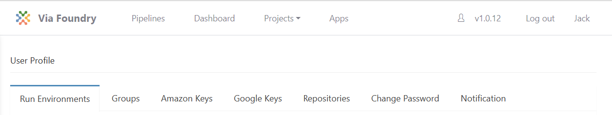
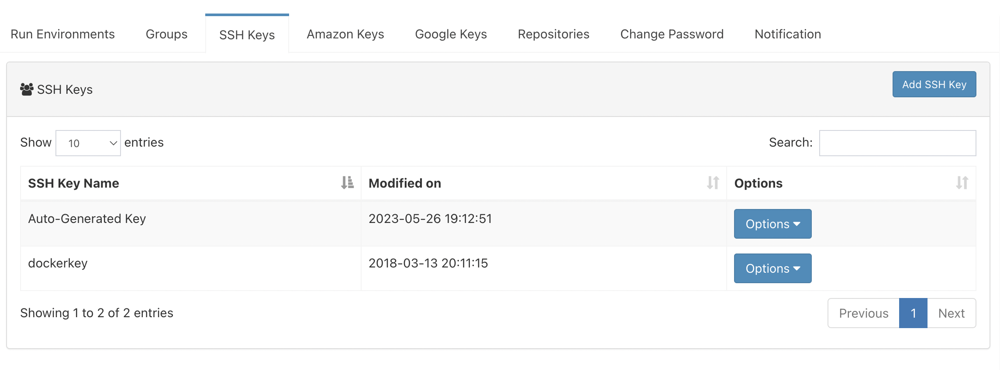
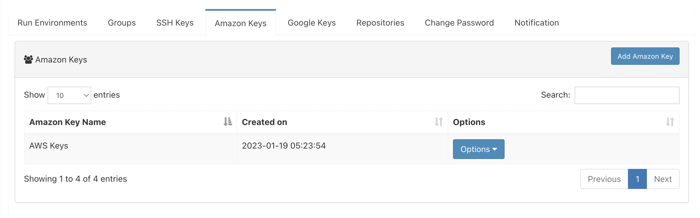
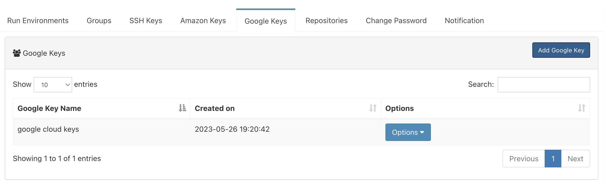
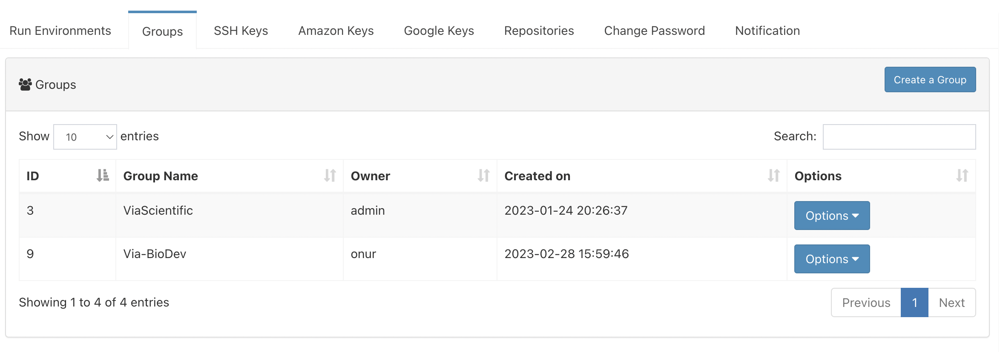
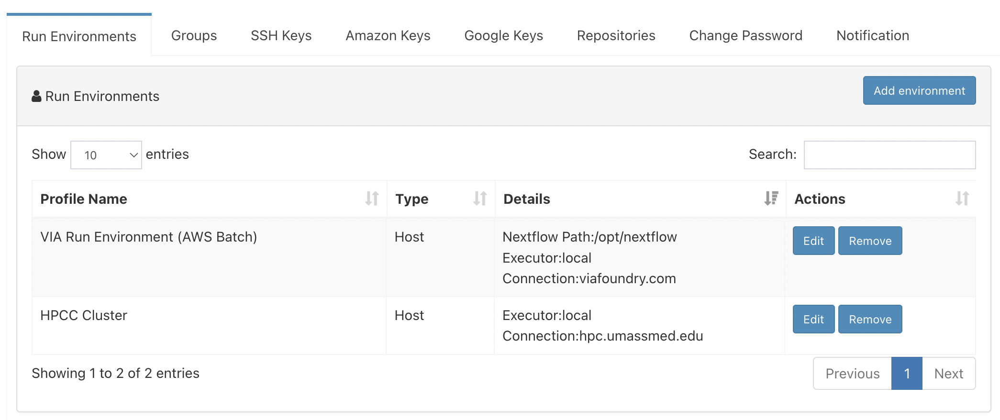
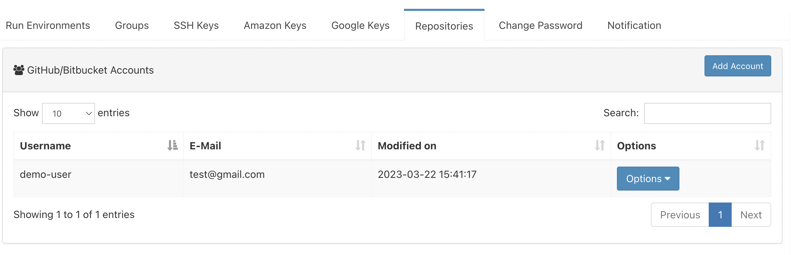
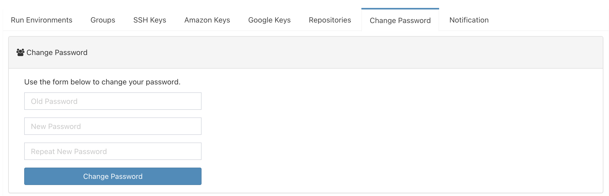

Profile Guide
In this guide, you'll discover all the available options you can explore on your Via Foundry Profile page.
Profile Page
After logging in, simply click on the "Profile" tab located at the top-right corner of your screen. You'll see a number of different tabs on your profile page that you can click through and explore.

The platform offers several options for creating connection profiles and managing your credentials.
- First up is the Run Environments tab, which is your main hub for creating connection profiles.
- Next, you can use the Groups tab to create a group and add members to it, allowing you to share your runs or pipelines with others.
- To manage your SSH keys, you'll need to head over to the SSH Keys tab. This section allows you to perform essential actions such as generating new keys or inputting pre-existing SSH key pairs within the Edit section. By utilizing this functionality, you can establish secure connections with various hosts. It's worth mentioning that for the majority of accounts, these keys are automatically generated,
- You can also add your Amazon Keys or Google Keys in order to execute your runs in the cloud.
- Under the Repositories tab, you can enter your security credentials to pull/push pipeline information to your Github or Bitbuckets accounts.
- If you currently rely on a password for logging into your account, you can easily modify your password by accessing the dedicated Change Password section.
- Lastly, in the Notification tab, you can opt into receiving emails about completed or failed runs.
It's important to note that before creating a run environment, you'll need to create SSH keys in the Run Environments tab. And if you plan on executing runs in the cloud, you'll need to add your Amazon or Google keys as well.
SSH Keys

To create or enter existing SSH key pairs, navigate to the SSH Keys
tab and click on the Add SSH Key button in the top right corner.
Next, you'll need to choose between two methods:
- A. Use your own keys: If you choose this option, you'll need to provide your private and public key pairs. You can find these keys on your computer at the default location: '~/.ssh/id_rsa 'for the private key and '~/.ssh/id_rsa.pub' for the public key. Simply copy and paste these keys into the appropriate fields in your browser. If these files don't exist or you want to create new ones, check out this link for guidance.
- B. Create new keys: To generate a new pair of SSH keys, simply click the "Generate Keys" button.
Once you have saved your key, rest assured that your information will be encrypted and securely stored. To establish a connection, you need to add your public key to the '~/.ssh/authorized_keys' file on the host machine. This step ensures that your public key is recognized and authorized for secure communication with the host. If you require assistance with this step or have any questions, please don't hesitate to contact us at support@viascientific.com.
Amazon Keys

To enter your AWS security credentials (access key, secret key, and
default region), head over to the Amazon Keys tab and click on the
Add Amazon Key button. Rest assured that your information will be
encrypted and kept secure, and only you will have full access to view
and modify your key information.
Note: Once you've saved your key, it won't be visible for security purposes. However, you can always overwrite it with a new key or delete it if needed.
Google Keys

To enter your Project ID and Service Account Key in the Google keys tab,
start by clicking the Add Google Key button.
- For your Project ID, head over to the Google Cloud Console and navigate to the Dashboard section. From there, check the Project info box to find your Project ID, which should look something like "viafoundry-193616".
- To input your Service Account Key, also head over to the Google
Cloud Console and navigate to APIs & Services → Credentials.
From there, click on the
Create Credentialsdrop-down and selectService Account Key. On the following page, choose an existing service account or create a new one if needed, then select JSON as the "Key Type". Finally, click the Create button and download the JSON file with a name of your choice (e.g., creds.json).
Remember that, after saving your key, you won't be able to view your Service Account Key for security reasons. However, you can always overwrite it with a new key or delete it if necessary.
Groups

In the Groups tab, you can create groups by selecting the
Create a Group button. Once you have created a group, you can add
members by clicking the Options > Edit Group Members button. This
interactive platform allows you to share your process, pipeline, or
projects with your group members. To view the current members of the
group, select the Options > View Group Members button. Additionally,
you have the option to delete your group by selecting the
Options > Delete Group button, or to edit its name with
Options > Edit Group Name.
Run Environments

This section is used for defining connection profiles by clicking on the
Add Environment button. You can choose from three options: Host,
Amazon or Google.
- Host: The "Host" option is designed for users who have access to High Performance Computing (HPC) environments or personal workstations. If you intend to submit jobs to AWS Batch, you can utilize the "Host" option as well. Whether you are working with HPC systems or leveraging the power of AWS Batch, the "Host" option provides a flexible and scalable solution for running your workflows.
- Amazon: This option is for users who have an Amazon Web Services (AWS) account or plan to create an EC2 instance to run jobs in the cloud.
- Google: This option is for users who want to use their Google Cloud account to run jobs in the cloud.
A. Defining Host Profiles:
-
Username/Hostname: To connect to a remote host, you will need to provide your username and the hostname of the remote host separately. For example, if your run will be submitted to
us2r@ghpcc06.umassrc.org, you should enterus2ras the username andghpcc06.umassrc.orgas the hostname. -
SSH Port (optional): By default, Via Foundry uses TCP port 22 for SSH connections. However, you can specify a different port number if needed.
-
SSH Keys: Via Foundry stores your SSH keys in the SSH keys tab and uses them to authenticate your SSH connections.
-
Nextflow Path (optional): If the Nextflow executable is not in your $PATH, you can specify the path to the executable in this block. For example:
/project/umw_biocore/bin -
Singularity Cache Folder: Via Foundry uses a local directory to store Singularity images downloaded from remote hosts. By default, this directory is located in your home directory.
-
Profile Variables: To facilitate the use of genome reference and index files in your pipelines, you can specify a download directory in which these files are stored. If multiple users are using Via Foundry, it is recommended to use a shared path in your cluster. For example:
params.DOWNDIR="/share/viafoundry" -
Environment Variables: You can set BASH environmental variables here. Note: don't use spaces to separate multiple variables; use newlines instead.
-
Executor Settings: In Via Foundry, there are four different sections to control executor settings: the first two are defined in Profile -> Run Environment, and the remaining two are adjusted in the Advanced tab of the run page. If you select an executor other than "Local" or "Ignite", Via Foundry prompts you to enter additional settings, such as the queue/partition, memory, CPU, and time.
1. Executor of Nextflow (navigate to Profile - Run Environments):
This setting controls how Via Foundry initiates Nextflow. Currently, Via Foundry supports the Local, SGE, SLURM, and LSF executors to initiate Nextflow. For the SGE, SLURM, and LSF executors, Via Foundry only uses them to run Nextflow itself, so the time limit should be long enough to execute all processes in the pipeline. For local execution, Via Foundry limits the total amount of memory and CPU that can be used, so these values should be close to the maximum capacity of your computer.
- Suggested parameters for SGE/SLURM/LSF: long (queue) 8 (GB Memory) 1 (CPU) 5000-8000 (min, Time)
- Suggested parameters for Local: 100 (GB Memory) 8 (CPU)
2. Executor of Nextflow Jobs (navigate to Profile - Run Environments):
This setting will be used as the default setting for submitted jobs by Nextflow if you don't set any parameters in the Advanced section of your run page.
- Suggested parameters for SGE/SLURM/LSF: short (queue) 20 (GB Memory) 1 (CPU) 240 (min, Time)
- Suggested parameters for Local: 20 (GB Memory) 1 (CPU)
3. Executor Settings for All Processes (in the advanced tab of run page):
These settings will overwrite those in Executor of Nextflow Jobs and set default parameters for all Nextflow Jobs.
- Suggested parameters for SGE/SLURM/LSF: short (queue) 20 (GB Memory) 1 (CPU) 240 (min, Time)
- Suggested parameters for Local: 20 (GB Memory) 1 (CPU)
4. Executor Settings for Each Process (in the advanced tab of run page):
If a particular process requires different parameters than the defaults (which are defined in the Executor Settings for All Processes or Executor of Nextflow Jobs sections), you can overwrite the general settings by clicking the checkbox of the process that you want to change. This will only affect the settings of the selected process and keep the original settings for the rest of the processes.
- Suggested parameters for SGE/SLURM/LSF: long (queue) 20 (GB Memory) 4 (CPU) 1000-5000 (min, Time)
- Suggested parameters for Local: 20 (GB Memory) 4 (CPU)
Note: If non-standard resources or settings are required for the executor, then you can specify these parameters by using Other Options box. For instance, to submit an SGE job with 3 CPU using parallel environments, you can enter
-pe orte 3(to use MPI for distributed-memory machines) or-pe smp 3(to use OpenMP for shared-memory machines) in the Other Options box, leaving the CPU box empty.
B. Defining AWS Batch Profiles:
Please choose type of the run environment as "Host" and enter following information.
-
Username/Hostname: To connect to a remote host, you will need to provide your username and the hostname of the remote host separately. For example, if your run will be submitted to
us2r@ghpcc06.umassrc.org, you should enterus2ras the username andghpcc06.umassrc.orgas the hostname. -
SSH Port (optional): By default, Via Foundry uses TCP port 22 for SSH connections. However, you can specify a different port number if needed.
-
SSH Keys: Via Foundry stores your SSH keys in the SSH keys tab and uses them to authenticate your SSH connections.
-
Nextflow Path (optional): If the Nextflow executable is not in your $PATH, you can specify the path to the executable in this block. For example:
/project/umw_biocore/bin -
Profile Variables: To facilitate the use of genome reference and index files in your pipelines, you can specify a download directory in which these files are stored. If multiple users are using Via Foundry, it is recommended to use a shared path in your cluster. For example:
params.DOWNDIR="/share/viafoundry" -
Environment Variables: You can set BASH environmental variables here. Note: don't use spaces to separate multiple variables; use newlines instead.
-
Executor of Nextflow: Please select the
LocalNextflow executor. -
Executor Settings for Nextflow: Please enter 10GB in the Memory field and 1 in the CPU field.
-
Executor of Nextflow Jobs: Please select
AWS Batchfor Nextflow jobs. -
Queue, Memory, CPU, and other options: Please enter the queue name and set the default memory and CPU you'll allocate for each job (e.g. 10GB memory and 1CPU). These settings can be adjusted in the run page.
-
Amazon Keys: AWS credentials that are saved in the Amazon Keys tab will allow you to submit jobs to AWS Batch. However, if an IAM role is already defined for the host machine, you can skip this step. The IAM role associated with the host machine grants the necessary permissions for interacting with AWS services, including AWS Batch. By either providing the AWS credentials or utilizing the existing IAM role, you can seamlessly submit your jobs to AWS Batch and leverage the power of cloud computing for your workflows.
-
Default Working Directory: Default directory in the host machine where runs will be executed. (eg.
/data/viafoundry) -
Default Bucket Location for Publishing: The default bucket location where run reports will be published. (e.g.
s3://bucket/viafoundry)
C. Defining Non-Batch Amazon Web Services Profiles:
- SSH Keys: These are saved in the SSH Keys tab and will be used when connecting to a host. SSH keys are a secure way to authenticate and encrypt connections between servers. It's recommended to generate a new key pair for each instance you plan to connect to.
- Amazon Keys: These AWS credentials are saved in the Amazon Keys tab and allow you to start/stop Amazon EC2 instances. These credentials consist of an access key and a secret access key.
- Instance Type: This refers to the type of Amazon EC2 instance that you will use. Instance types comprise varying combinations of CPU, memory, storage, and networking capacity. For example, "m3.xlarge" is an instance type that provides a balance of CPU and memory resources.
- Image ID: This is the virtual machine ID (VM ID) that you will use to launch the instance. The image ID is specific to the region and operating system that you are using. For example, "ami-032a33ebe57465518" is a sample image ID for an Amazon Machine Image (AMI) that is based on the Ubuntu operating system.
If you want to create your own image, please install the following programs:
- Singularity
- Docker engine (version 1.11 or higher)
- Apache Ignite with Cloud-init package
- Nextflow
- AWS CLI
-
Subnet ID/Security Group/Shared Storage ID/Shared Storage Mount:
The filesystem needs to be created at https://console.aws.amazon.com/efs/, and this information will be obtained upon the creation of a shared file system.
- Subnet ID: Identifier of the VPC subnet to be applied, e.g., subnet-05222a43.
- Security Group: Identifier of the security group to be applied, e.g., sg-df72b9ba, which is used by default.
- Shared Storage ID: Identifier of the shared file system instance, e.g., fs-1803efd1.
- Shared Storage Mount: Mount path of the shared file system, e.g., /mnt/efs.
Please make sure the following criteria are satisfied:
- The image used must have the directory to mount this storage.
- The output directory must be under this mount location.
- The storage system must be created in the selected region, and necessary rights need to be given in the console.
- The EC2FullAccess and S3FullAccess permissions have been added. Warning: Both the EFS and images should be located in the same location.
-
Default Working Directory: This is the default directory in the host machine where runs will be executed. It is an optional parameter for AWS. For example, you can set it to "/data/viafoundry".
-
Default Bucket Location for Publishing: The default bucket location where run reports will be published. (e.g.
s3://bucket/viafoundry) -
Nextflow Path (optional): If the Nextflow path is not added to the $PATH environment variable, you can define the path in this block. For example, you could set it to
/project/umw_biocore/bin. -
Singularity Cache Folder: This is the directory where remote Singularity images are stored. By default, the home directory is used.
-
Profile Variables: You can set commonly used pipeline variables here. For instance,
params.DOWNDIRis used in most of our public pipelines to save all genome related files (fasta, index etc.), so you can set this variable like this:params.DOWNDIR = "/share/dnext_data"You can also enter multiple variables by separating them with newlines. -
Executor of Nextflow/Executor of Nextflow Jobs: Amazon instances are automatically configured to use the Ignite executors. As such, when defining an Amazon profile, you should select
Localfor Executor of Nextflow andIgnitefor Executor of Nextflow Jobs.
D. Defining Google Profiles:
-
SSH Keys: are saved in SSH keys tab and will be used while connecting to host.
-
Google Keys: Google credentials that are saved in Google keys tab and will allow to start/stop Google Cloud instances.
-
Zone: The Google zone where the computation is executed.(eg. us-east1-b)
-
Instance Type: Google Cloud machine types that comprise varying combinations of CPU, memory, storage, and networking capacity (eg.
n1-standard-4). -
Image ID: Virtual machine ID (eg.
dolphinnext-193616/global/images/dolphinnext-images-v1).If you want to create your own image, please install following programs:
- Docker engine (version 1.11 or higher)
- Apache Ignite with Cloud-init package
- Nextflow
- gcloud
-
Default Working Directory: This is the default directory in the host machine where runs will be executed. It is mandatory for Google Cloud profiles. (e.g., /data/dnext)
-
Default Bucket Location for Publishing: This is the default bucket location where Via Foundry reports will be published. It is mandatory for Google Cloud profiles, and you can always edit this path in the run page. For example, you could set it to
gs://bucket/dnext. -
Nextflow Path (optional): If the Nextflow path is not added to the $PATH environment variable, you can define the path in this block. For example, you could set it to
/project/umw_biocore/bin. -
Singularity Cache Folder: This is the directory where remote Singularity images are stored. By default, the home directory is used. Note that when using a computing cluster, it must be a shared folder that is accessible from all computing nodes.
-
Profile Variables: You can set commonly used pipeline variables here. For instance,
params.DOWNDIRis used in most of our public pipelines to save all genome related files (fasta, index etc.), so you can set this variable like this:params.DOWNDIR = "/share/dnext_data"You can also enter multiple variables by separating them with newlines. -
Executor of Nextflow/Executor of Nextflow Jobs: Google instances are automatically configured to use the Ignite executors. As such, when defining a Google profile, you can select
Localfor Executor of Nextflow andIgnitefor Executor of Nextflow Jobs.
Repository Connections

You can enter your GitHub or Bitbucket security credentials (Username,
E-mail, Password) by clicking on the Add Account button in the
Repositories tab. Your information will be encrypted and kept
secure. By adding a Github or Bitbucket account, you'll be able to push
your pipeline information into a public account, where you can then
share it with others.
-
GitHub Credentials: GitHub access token will be used for creating and updating GitHub repositories. Please follow this guide in GitHub to create a token. While creating token, please enable
repoandwrite:packagesin the scope section. -
Bitbucket Credentials: To utilize SSH Key pairs for importing and updating Bitbucket repositories, you need to follow these steps:
- In Via Foundry, navigate to your profile by clicking on your avatar and selecting "Profile."
- Go to the "SSH Keys" tab within your profile.
- Create a new key pair by generating a new SSH key.
- Open Bitbucket and access your Personal settings by clicking on your avatar.
- Within Bitbucket, select "SSH keys" and click on the "Add key" button.
- Copy the generated public key from Via Foundry (DolphinNext) and paste it into the SSH Key field in Bitbucket.
- Finally, make sure to select the used SSH key in the window within Via Foundry.
By following these steps, you will successfully configure the SSH Key pairs between Via Foundry and Bitbucket, allowing you to manage your repositories seamlessly.
Change Password

If you currently rely on a password for logging into your account, you can easily modify your password by accessing the dedicated Change Password section.
Support
For any questions or help, please reach out to support@viascientific.com with your name and question.